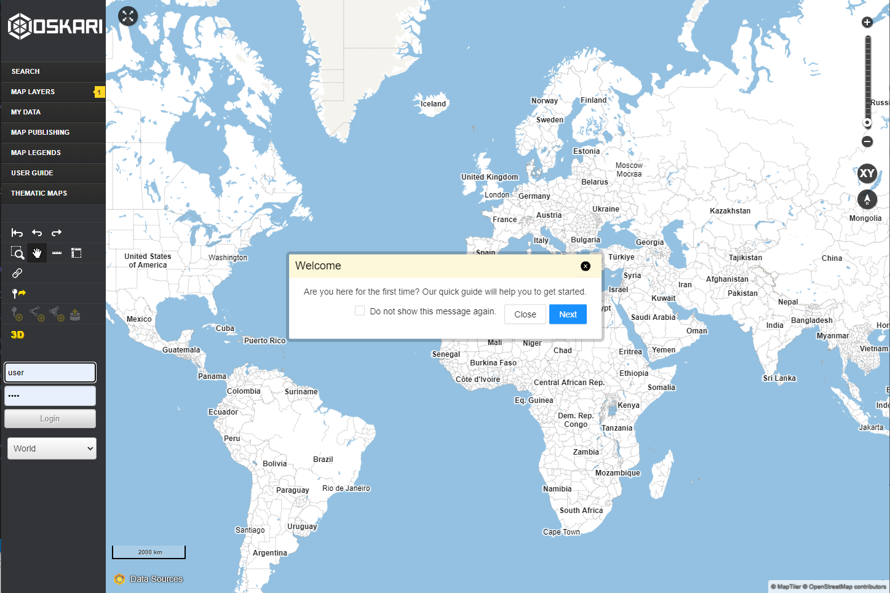

Azure @ MML
Sami Mäkinen - NLS Finland
Jotain yleistä mml matskua tähän?
Alkuun
- AZ-900 everyone!
- Pilvipilotti
- ???
- Profit
demo.oskari.org
Oskari in Azure
C4Deployment
Person(user, "User", "")
System_Boundary(azure, "Azure", ""){
Container(appservice-oskari, "Oskari", "")
Container(storage, "Static file share", "")
Boundary(vnet, "vnet", ""){
Container(appservice-geoserver, "Geoserver", "")
ContainerDb(postgres, "PostgreSQL", "Main DB", "Contains application config and content")
ContainerDb(redis, "Cache", "Cache & cluster messaging", "Stores user sessions, statistical data cache, messaging between cluster nodes")
}
}
Rel(user, appservice-oskari, "Uses", "HTTPS")
Rel(user, storage, "Uses", "HTTPS")
Rel(appservice-oskari, storage, "Delivers", "")
Rel(appservice-oskari, appservice-geoserver, "User content", "HTTPS")
Rel(appservice-oskari, postgres, "Content and config", "JDBC")
Rel(appservice-geoserver, postgres, "User content", "JDBC")
Rel(appservice-oskari, redis, "Sessions and cache", "TCP")
UpdateRelStyle(appservice-oskari, storage, $offsetY="-10", $offsetX="-20")
UpdateRelStyle(user, appservice-oskari, $offsetY="-40", $offsetX="-60")
UpdateRelStyle(user, storage, $offsetY="-40", $offsetX="-120")
UpdateRelStyle(appservice-oskari, appservice-geoserver, $offsetY="30", $offsetX="-80")
UpdateRelStyle(appservice-oskari, postgres, $offsetY="30", $offsetX="40")
UpdateRelStyle(appservice-geoserver, postgres, $offsetY="20", $offsetX="-40")
UpdateRelStyle(appservice-oskari, redis, $offsetY="40", $offsetX="150")
Application Gateway eteen
C4Deployment
Person(user, "User", "")
System_Boundary(azure, "Azure", ""){
Container(firewall, "Application Gateway", "")
Boundary(vnet, "vnet?", ""){
Container(appservice-oskari, "Oskari", "")
Container(storage, "Static file share", "")
Boundary(vnet2, "Sisäiset palvelut", ""){
Container(appservice-geoserver, "Geoserver", "")
ContainerDb(postgres, "PostgreSQL", "Main DB", "Contains application config and content")
ContainerDb(redis, "Cache", "Cache & cluster messaging", "Stores user sessions, statistical data cache, messaging between cluster nodes")
}
}
}
Rel(user, firewall, "Uses", "HTTPS")
Rel(firewall, appservice-oskari, "Uses", "HTTPS")
Rel(firewall, storage, "Uses", "HTTPS")
Rel(appservice-oskari, storage, "Delivers", "")
Rel(appservice-oskari, appservice-geoserver, "User content", "HTTPS")
Rel(appservice-oskari, postgres, "Content and config", "JDBC")
Rel(appservice-geoserver, postgres, "User content", "JDBC")
Rel(appservice-oskari, redis, "Sessions and cache", "TCP")
UpdateRelStyle(appservice-oskari, storage, $offsetY="-10", $offsetX="-20")
UpdateRelStyle(user, appservice-oskari, $offsetY="-40", $offsetX="-60")
UpdateRelStyle(user, storage, $offsetY="-40", $offsetX="-120")
UpdateRelStyle(appservice-oskari, appservice-geoserver, $offsetY="30", $offsetX="-80")
UpdateRelStyle(appservice-oskari, postgres, $offsetY="30", $offsetX="40")
UpdateRelStyle(appservice-geoserver, postgres, $offsetY="20", $offsetX="-40")
UpdateRelStyle(appservice-oskari, redis, $offsetY="40", $offsetX="150")
Devops jutui?
Application components
|
- oskari-server
- sample-server-extension
- oskari-frontend
- sample-application
|
|
- config repository
- azuren pipelinet tms
|